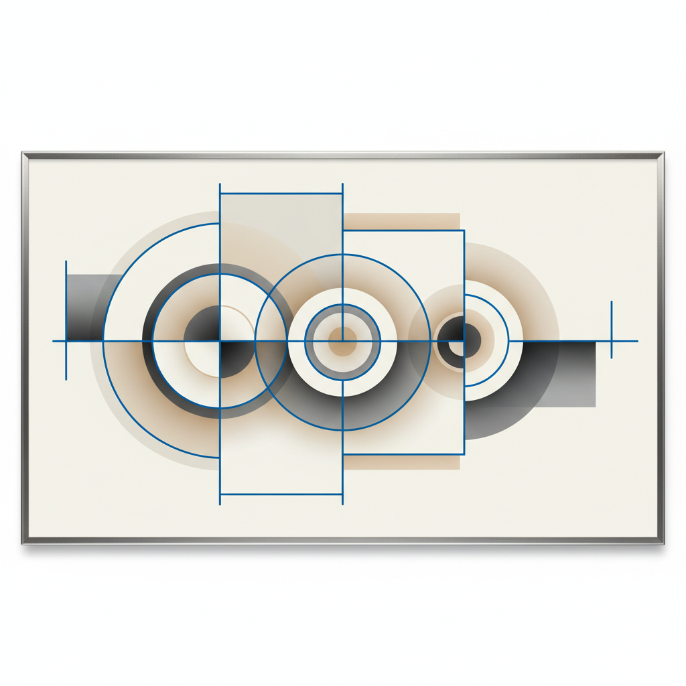

You Only Look Once: A Deep Dive into the YOLO Object Detection Algorithm

In the world of computer vision, the ability to detect objects in real-time is a game-changer. For years, top-performing models relied on complex, multi-stage pipelines that were powerful but notoriously slow. In 2016, a paper titled “You Only Look Once” challenged this paradigm by introducing YOLO, a unified model that framed object detection as a single regression problem, achieving incredible speeds. In this post, we will take a deep dive into this seminal paper, exploring its core ideas, architecture, and lasting impact on the field.
{kind=link}
The Abstract
The abstract of any great paper tells a compelling story, and this one is no exception. In just a few paragraphs, the authors outline the problem with existing methods, introduce their groundbreaking solution, and present a series of bold claims about its performance.
{kind=link}
A New Philosophy: Detection as Regression
We present YOLO, a new approach to object detection. Prior work on object detection repurposes classifiers to perform detection. Instead, we frame object detection as a regression problem to spatially separated bounding boxes and associated class probabilities.
Right away, the authors establish a clear break from the past. Before YOLO, the dominant object detection paradigm was a multi-stage process. Let’s quickly define the terms here:
- Classifier: A model that answers the question, “What is in this image?” For example, it might look at a picture and output “cat.”
- Detector: A model that answers the questions, “What is in this image, and where is it?” It would output not only “cat” but also the coordinates of a bounding box around the cat.
Older systems, like the popular R-CNN (Regions with Convolutional Neural Networks) family, “repurposed classifiers” by first generating a large number of potential object locations (region proposals) and then running a powerful classifier on each one. This is like searching for a face in a crowd by taking thousands of small snapshots and asking “Is there a face in this one?” over and over. It’s effective, but incredibly slow.
YOLO’s radical idea is to reframe this. Instead of a complex, multi-step classification task, they treat it as a single regression problem.
- Regression is a machine learning task where the goal is to predict continuous numerical values. For example, predicting the price of a house is a regression problem.
In YOLO’s case, the model looks at the entire image just once and directly predicts a set of bounding boxes and class probabilities. The output isn’t just “cat,” but a list of numbers representing [class_of_object, x_coordinate, y_coordinate, width, height]. This is a fundamental philosophical shift.
One Network to Rule Them All
A single neural network predicts bounding boxes and class probabilities directly from full images in one evaluation. Since the whole detection pipeline is a single network, it can be optimized end-to-end directly on detection performance.
This sentence contains two massive benefits that stem from the regression approach.
- “One evaluation”: This is the very soul of the name “You Only Look Once.” Unlike R-CNN, which might evaluate thousands of regions, YOLO’s network processes the entire image in a single forward pass.
- “Optimized end-to-end”: In the older multi-stage pipelines, each component (region proposal, feature extraction, classification) was often trained separately. This makes it difficult to optimize the system as a whole. Because YOLO is a single, unified network, the entire architecture can be trained jointly. The error from the final prediction can be used to tweak weights throughout the entire network, leading to a more holistic and efficient learning process.
Speed, Accuracy, and Generalization
The rest of the abstract is dedicated to laying out the impressive results of this new approach.
Our unified architecture is extremely fast. Our base YOLO model processes images in real-time at 45 frames per second. A smaller version of the network, Fast YOLO, processes an astounding 155 frames per second…
This is the headline feature. Real-time video is typically 24-30 frames per second (FPS). At 45 FPS, YOLO was not just fast; it was a true real-time detector on a single GPU, something previously out of reach for models of this accuracy.
Compared to state-of-the-art detection systems, YOLO makes more localization errors but is less likely to predict false positives on background.
The authors are candid about the trade-offs. YOLO might not draw the tightest possible box around an object (a localization error), but it makes a different kind of error far less often. Because YOLO sees the entire image at once, it has global context. It’s less likely than region-based methods to mistake a patch of background for an object.
Finally, YOLO learns very general representations of objects. It outperforms other detection methods, including DPM and R-CNN, when generalizing from natural images to other domains like artwork.
This is a powerful final claim. The model’s understanding of objects is less brittle and more abstract. It learns the essential features of what makes a person a “person,” allowing it to detect people not just in photographs but also in paintings, a much harder task where colors and textures are completely different. This suggests a more robust and deeper form of learning.
1. Introduction
The Need for Speed and Accuracy
The authors begin by establishing why object detection is such a critical problem in computer vision. They draw a powerful parallel to the human visual system.
Humans glance at an image and instantly know what objects are in the image, where they are, and how they interact. The human visual system is fast and accurate, allowing us to perform complex tasks like driving with little conscious thought.
This isn’t just poetic framing; it’s a clear statement of the goal. The authors are aiming to build a system that mimics the speed and efficiency of human perception. They immediately ground this goal in practical, high-impact applications: self-driving cars, assistive devices for the visually impaired, and responsive robotics. The underlying message is that for computers to truly interact with the physical world, they need a visual system that is both fast and accurate.
The Problem with Multi-Stage Pipelines
Next, the paper pivots to the core problem it aims to solve: the dominant object detection methods of the time were too slow and cumbersome. The authors group these methods into two main categories.
First, they mention older systems like Deformable Parts Models (DPM).
Systems like deformable parts models (DPM) use a sliding window approach where the classifier is run at evenly spaced locations over the entire image [10].
The sliding window approach is exactly what it sounds like: a window of a fixed size slides across the image, and a classifier is run at every single location to determine if an object is present. To detect objects of different sizes, this process is repeated with different window scales. While exhaustive, this method is computationally expensive and inefficient.
Second, they critique the more modern and powerful family of detectors based on R-CNN.
More recent approaches like R-CNN use region proposal methods to first generate potential bounding boxes in an image and then run a classifier on these proposed boxes. … These complex pipelines are slow and hard to optimize because each individual component must be trained separately.
This is the key critique. R-CNN and its successor, Fast R-CNN, broke the problem into distinct stages:
- Generate Proposals: Use an algorithm (like Selective Search) to identify a few thousand “regions of interest” that might contain an object.
- Classify Regions: Run a powerful convolutional neural network (CNN) on each of these proposed regions to classify them.
- Refine and Post-process: Clean up the results by refining the bounding box locations, removing duplicates (non-max suppression), and other steps.
While more accurate than DPM, this pipeline was incredibly slow (the original R-CNN took ~47 seconds per image!) and clunky. Because each stage was a separate system trained independently, it was impossible to optimize the pipeline from end to end.
A Unified Approach: Detection as Regression
Having established the problem, the authors introduce their elegant solution.
We reframe object detection as a single regression problem, straight from image pixels to bounding box coordinates and class probabilities. Using our system, you only look once (YOLO) at an image to predict what objects are present and where they are.
This is the paper’s core thesis. Instead of a complex, multi-part pipeline, YOLO uses a single convolutional network. This network takes the entire image as input and, in a single forward pass, outputs the final detections. There are no separate steps for region proposals or classification. As Figure 1 in the paper illustrates, the pipeline is refreshingly simple: resize the image, run the network, and threshold the detections.
{kind=link}
This unified design has two major advantages that we’ll see repeated throughout the paper: it’s incredibly fast, and it can be trained end-to-end, allowing the model to directly optimize for detection performance.
The Three Core Benefits of YOLO
The introduction concludes by laying out three specific, powerful benefits that stem from this unified design.
Blazing Speed: The most immediate advantage is speed. By eliminating the complex pipeline, YOLO achieves performance that was previously unheard of for a deep learning detector.
Our base network runs at 45 frames per second with no batch processing on a Titan X GPU and a fast version runs at more than 150 fps. This means we can process streaming video in real-time with less than 25 milliseconds of latency.
Global Context: This is a more subtle but crucial benefit. Unlike methods that analyze thousands of individual region proposals in isolation, YOLO sees the entire image during both training and inference.
Unlike sliding window and region proposal-based techniques, YOLO sees the entire image during training and test time so it implicitly encodes contextual information about classes as well as their appearance.
This global context makes YOLO much less likely to mistake a background patch for an object. The authors note that Fast R-CNN, a top detector at the time, makes more than double the number of background errors precisely because it lacks this broader context.
Superior Generalization: The features YOLO learns are more robust and generalizable. The authors present a compelling piece of evidence:
When trained on natural images and tested on artwork, YOLO outperforms top detection methods like DPM and R-CNN by a wide margin.
This suggests that YOLO isn’t just memorizing textures; it’s learning the more abstract spatial relationships and shapes that define an object, allowing it to perform well even in unfamiliar visual domains.
Acknowledging the Trade-offs
Finally, in a sign of good scientific practice, the authors are upfront about YOLO’s limitations.
YOLO still lags behind state-of-the-art detection systems in accuracy. While it can quickly identify objects in images it struggles to precisely localize some objects, especially small ones.
This establishes the central trade-off of the initial YOLO model: it sacrifices some localization accuracy for massive gains in speed and a reduction in background errors. This sets the stage for the experimental section, where these claims will be put to the test.
2. Unified Detection
The authors begin this section by reiterating the core philosophy: unifying the complex, multi-stage pipeline of previous object detectors into a single, elegant neural network.
We unify the separate components of object detection into a single neural network. Our network uses features from the entire image to predict each bounding box. It also predicts all bounding boxes across all classes for an image simultaneously. This means our network reasons globally about the full image and all the objects in the image.
This isn’t just a minor tweak; it’s a complete reimagining of the problem. Let’s break down the ingenious mechanism they designed to achieve this.
The S x S Grid: Carving Up the Image
The first and most critical concept to understand is the grid system.
Our system divides the input image into an S × S grid. If the center of an object falls into a grid cell, that grid cell is responsible for detecting that object.
Imagine laying a chessboard over the input image. For this paper, the authors use a 7x7 grid, so imagine a 49-square grid. The core rule of YOLO is simple: whichever grid cell contains the center point of an object is solely “responsible” for detecting that object.
This is a brilliant simplification. Instead of searching for an object everywhere in the image, the problem is now reduced to each of the 49 grid cells asking a much simpler set of questions: “Is there an object center in me? If so, where is its bounding box, and what class is it?”
During inference (when the model is making predictions on a new, unseen image), the model doesn’t know where the center of the object is. Its job is to predict it.
The concept of “the center of an object falls into a grid cell” is central to the training process.
Here’s how it works:
The Ground Truth Data: To train an object detector, you need a dataset of images that have been manually labeled by humans. This is called the “ground truth.” For each object in an image, the label consists of two things:
- The object’s class (e.g., “dog”).
- The coordinates of a tight bounding box around the object (e.g.,
[x_min, y_min, x_max, y_max]).
Calculating the Center: From the ground truth bounding box coordinates, we can easily calculate the true center of the object:
center_x = (x_min + x_max) / 2center_y = (y_min + y_max) / 2
Assigning Responsibility: Now, during training, we take the input image and conceptually overlay our
S x Sgrid (e.g., 7x7). We look at the calculated(center_x, center_y)for a specific ground truth object (e.g., the dog). We then determine which of the 49 grid cells that center point falls into.That one specific grid cell is now designated as “responsible” for predicting the dog.
The Role of the Loss Function: When the network makes its prediction for that image, we compare its output to the ground truth. The loss function (which we’ll get to in the training section) is structured to enforce this “responsibility” rule:
- For the grid cell that is responsible for the dog, the loss function will heavily penalize it if it fails to predict a good bounding box and the correct “dog” class.
- For all the other 48 grid cells that are not responsible for the dog, the loss function will penalize them if they predict that an object is present. It pushes their “objectness” or “confidence” scores towards zero.
Analogy: Imagine a classroom of 49 students (the grid cells) and you show them a picture of a dog. You point to the student sitting in the third row, second seat, and say, “You, and only you, are responsible for telling me everything about that dog. The rest of you must remain silent and say ‘no object here’.” During the test (training), you grade that one student on how well they describe the dog and you grade everyone else on how well they stayed quiet.
Over thousands of training examples, each grid cell learns its job. It learns to look at the features within its receptive field and decide: “Based on the patterns I see, is an object’s center likely located within my boundaries? If so, what does that object look like (its w and h), and what class is it?”
{kind=link}
{kind=link}
The short answer is: It doesn’t matter how many grid cells the object’s body spans. The only thing that matters is the single grid cell that contains the object’s exact center point.
Let’s break this down with an example.
Imagine a large object, like a bus, in a 7x7 grid. The body of the bus might cover 10 or 15 different grid cells.
However, the bus has only one center point. Let’s say we calculate its center from the ground truth bounding box, and that point (center_x, center_y) falls inside the grid cell at row 4, column 3 (the red cell in the image).
According to YOLO’s strict rule, only that single red grid cell is responsible for detecting the bus.
How Does That One Cell Describe the Whole Bus?
This is where the design of the bounding box prediction (x, y, w, h) becomes so important. Remember:
- The
(x, y)coordinates pinpoint the center’s location within the red grid cell. - The
(w, h)(width and height) are predicted relative to the entire image.
So, during training, the network learns to make the red grid cell predict:
- A high objectness score: “Yes, an object’s center is in me!”
- The correct class: “The object is a bus.”
- Bounding box parameters
(x, y, w, h)that describe the whole bus. For example, it might predict awof 0.8 (meaning the bus is 80% of the image’s width) and anhof 0.2 (20% of the image’s height).
When these parameters are used to draw the final bounding box, it will be very large, starting from within the red cell but extending far out to cover the entire bus, spanning all the other 10-15 grid cells that the bus’s body touches.
What about the other grid cells the bus touches?
All the other grid cells that the bus body overlaps (the blue cells in the image) are trained to do the opposite. Since the bus’s center is not in them, their job is to predict “no object here.” The loss function will penalize them if they try to predict a bus, pushing their confidence scores toward zero.
{kind=link}
What Does Each Grid Cell Predict?
Each of these S x S grid cells is tasked with predicting three key pieces of information:
- Bounding Boxes: Each cell predicts
Bpotential bounding boxes for an object. The paper usesB=2. - Confidence Scores: For each of those
Bboxes, it predicts a confidence score. - Class Probabilities: For the cell as a whole, it predicts the probability of the object belonging to one of
Cclasses (e.g., dog, cat, car).
Let’s look at each of these in more detail.
1. Bounding Box Predictions
Each of the B bounding boxes is described by a vector of 5 numbers: (x, y, w, h, confidence).
(x, y): These are the coordinates of the center of the bounding box. Crucially, they are predicted relative to the bounds of the grid cell. So, an (x, y) of (0.5, 0.5) would mean the center of the box is exactly in the middle of that grid cell. This keeps the values bounded between 0 and 1, which makes them easier for the network to learn.(w, h): These are the width and height of the bounding box. These are predicted relative to the size of the whole image. Awof 0.5 means the box is half the width of the entire image.confidence: This score reflects how certain the model is that the box contains an object and how accurate it thinks the box is. This is important, so let’s give it its own section.
2. The Confidence Score
The confidence score is an elegant way to combine two pieces of information into one number.
Formally we define confidence as Pr(Object) * IOUtruthpred
Let’s break that down:
- Pr(Object): This is the probability that there is any object in the box.
- IOU (Intersection over Union): This is a fundamental metric in object detection. It measures how much a predicted bounding box overlaps with the ground truth (the hand-labeled) bounding box. Imagine two overlapping squares of paper. The IOU is the area of their overlap divided by the total area they cover together. An IOU of 1 means a perfect match, and an IOU of 0 means no overlap.
The confidence score is the product of these two values. If the model is certain no object exists in a cell (Pr(Object) is 0), the confidence score is 0. If an object does exist, the confidence score becomes equal to the IOU. This cleverly forces the model to learn to predict not just the presence of an object, but also bounding boxes that align well with it.
3. Conditional Class Probabilities
Finally, each grid cell predicts a set of class probabilities.
Each grid cell also predicts C conditional class probabilities, Pr(Classi|Object). These probabilities are conditioned on the grid cell containing an object.
This is another subtle but brilliant design choice. The network does not ask, “What is the probability of this being a cat?” Instead, it asks, “Given that there is an object in this grid cell, what is the probability of it being a cat?”
This makes the learning process much more efficient. The network doesn’t waste its predictive power trying to distinguish between 20 different classes for a patch of empty sky.
A key limitation is stated here:
We only predict one set of class probabilities per grid cell, regardless of the number of boxes B.
This means that even if a cell predicts two bounding boxes, it can only associate one class with them. This is why YOLO struggles to detect multiple small, nearby objects if their centers fall into the same grid cell (like a flock of birds).
The Final Output Tensor
When you put all of this together, the network’s final output is a single, large 3D tensor of size S x S x (B * 5 + C).
Using the paper’s example for the PASCAL VOC dataset:
S = 7(the grid size)B = 2(bounding boxes per cell)C = 20(number of object classes)
The output tensor size is 7 x 7 x (2 * 5 + 20), which simplifies to 7 x 7 x 30. This tensor contains all the predictions for the bounding boxes, their confidence scores, and the class probabilities for the entire image, generated in a single pass.
2.1. Network Design
To produce the 7 x 7 x 30 output tensor we just discussed, the authors needed to design a specific Convolutional Neural Network (CNN). The design is a masterclass in balancing performance and computational efficiency.
We implement this model as a convolutional neural network… The initial convolutional layers of the network extract features from the image while the fully connected layers predict the output probabilities and coordinates.
This describes the classic structure of a CNN for any vision task. The network is composed of two main parts:
- A Feature Extractor (Backbone): This is a series of convolutional layers that act like a set of increasingly sophisticated filters. Early layers might detect simple edges and colors, while deeper layers learn to recognize more complex textures and patterns like fur, eyes, or wheels.
- A Prediction Head: This is a set of fully connected layers at the end of the network that takes the rich feature representation from the backbone and translates it into the desired output—in this case, the bounding box coordinates and class probabilities.
Inspired by GoogLeNet, Simplified for Speed
The authors didn’t design their network in a vacuum. They drew inspiration from one of the top-performing image classification models of the era: GoogLeNet.
Our network architecture is inspired by the GoogLeNet model for image classification [34]. … Instead of the inception modules used by GoogLeNet, we simply use 1 × 1 reduction layers followed by 3 × 3 convolutional layers…
GoogLeNet was famous for its “Inception module,” a complex block that processed features at multiple scales simultaneously. The YOLO authors adopted GoogLeNet’s core idea of being computationally efficient but implemented it in a simpler way. They replaced the full Inception module with a simple two-step process:
- 1x1 Reduction Layers: A 1x1 convolution is a clever technique used to reduce the number of channels (the depth) in the feature map. Imagine you have a stack of 256 feature maps. A 1x1 convolution can “compress” that stack down to, say, 128 maps. This is computationally much cheaper than running a larger filter over all 256 maps.
- 3x3 Convolutional Layers: After reducing the feature depth, they apply a standard 3x3 convolution to extract the spatial features.
This 1x1 reduction -> 3x3 extraction pattern allows them to build a very deep network (24 convolutional layers) without the computational cost becoming unmanageable. It’s a pragmatic and effective design choice focused on speed.
The Full Architecture
{kind=link}
As shown in Figure 3 of the paper, the network progressively downsamples the image while increasing the feature depth:
- Input: A
448 x 448image. - Convolutional Backbone: A series of convolutional and max pooling layers systematically reduce the spatial dimensions (
448 -> 224 -> 112 -> 56 -> 28 -> 14 -> 7) while increasing the number of feature channels. This process squeezes the spatial information into an increasingly dense and rich feature representation. - Fully Connected Layers: Finally, the
7 x 7 x 1024feature map from the last convolutional layer is flattened and passed to two fully connected layers to produce the final prediction. - Output: The network’s final output layer is shaped into the
7 x 7 x 30tensor, which directly corresponds to theS x S x (B*5 + C)grid system we discussed earlier. The architecture is explicitly designed to produce this precise output shape.
Fast YOLO: The Lightweight Alternative
To push the boundaries of speed even further, the authors also created a smaller version of the network.
We also train a fast version of YOLO designed to push the boundaries of fast object detection. Fast YOLO uses a neural network with fewer convolutional layers (9 instead of 24) and fewer filters in those layers.
This is a straightforward trade-off. By reducing the network’s size and complexity, they achieve a massive speedup (from 45 FPS to 155 FPS), but at the cost of some accuracy. This provides users with a valuable option for applications where speed is the absolute highest priority.
2.2. Training
A great network architecture is nothing without a solid training strategy. The authors of YOLO employ a multi-step process that combines standard deep learning practices with several novel solutions tailored specifically to the challenges of object detection.
Step 1: Pretraining the Feature Extractor
Training a deep neural network with 24 layers from scratch requires an enormous amount of data. To give their model a head start, the authors first pretrain the convolutional layers on a large-scale image classification task.
We pretrain our convolutional layers on the ImageNet 1000-class competition dataset [30]. For pretraining we use the first 20 convolutional layers from Figure 3 followed by a average-pooling layer and a fully connected layer.
This is a classic and highly effective technique called transfer learning. The idea is that the features a network learns for classifying objects in ImageNet—like edges, textures, shapes, and parts—are also incredibly useful for detecting objects. By pretraining on the massive ImageNet dataset, the network’s “backbone” already has a sophisticated visual understanding of the world before it ever sees a single bounding box. This makes the final detection training faster and more effective.
Step 2: Adapting the Model for Detection
Once the feature extractor is pretrained, the model is converted for the detection task.
We then convert the model to perform detection. …we add four convolutional layers and two fully connected layers with randomly initialized weights. Detection often requires fine-grained visual information so we increase the input resolution of the network from 224 × 224 to 448 × 448.
Two key changes happen here:
- New Layers: Four new convolutional layers and two fully connected layers are added to the end of the pretrained backbone. These new layers are responsible for learning the detection-specific tasks: predicting bounding box coordinates and class probabilities for each grid cell.
- Higher Resolution: The input image size is nearly doubled. While
224x224is standard for ImageNet classification, object detection benefits from higher resolution. A448x448input allows the model to see more detail, which is crucial for accurately localizing smaller objects.
The final layer of the network is configured to produce the 7x7x30 tensor output we discussed previously. An important detail is that the authors normalize the bounding box parameters to fall between 0 and 1, which helps stabilize the training process.
The Heart of the Matter: The Loss Function
The most critical component of training is the loss function. This function measures how “wrong” the model’s predictions are compared to the ground truth labels. The entire goal of training is to adjust the network’s weights to minimize this loss.
The authors start with a simple choice: sum-squared error (SSE). However, they quickly point out that a naive SSE is not suitable for object detection due to several major challenges. Their solutions to these challenges are what make YOLO’s training so effective.
Challenge 1: The Object Imbalance
…in every image many grid cells do not contain any object. This pushes the “confidence” scores of those cells towards zero, often overpowering the gradient from cells that do contain objects.
In a typical image, only a few of the 49 grid cells will contain an object. The vast majority will be background. If we penalize all errors equally, the model will be overwhelmed by signals from the “no object” cells. It will quickly learn that the safest bet is to always predict “no object,” and training will fail.
Solution: The authors introduce two weighting parameters, λ_coord and λ_noobj.
- They increase the loss from bounding box coordinate predictions (
λ_coord = 5). This tells the model that getting the box location right for an actual object is very important. - They decrease the loss from confidence predictions for cells that don’t contain objects (
λ_noobj = 0.5). This tells the model, “Don’t worry so much about these background cells; focus your learning on the cells that actually contain objects.”
Challenge 2: The Box Size Imbalance
Sum-squared error also equally weights errors in large boxes and small boxes. Our error metric should reflect that small deviations in large boxes matter less than in small boxes.
A 5-pixel error in a bounding box for a huge car is negligible. That same 5-pixel error for a tiny bird could be the difference between a good detection and a complete miss. A simple SSE treats both errors as equally bad.
Solution: This is one of the most clever tricks in the paper. Instead of predicting the width and height (w, h) directly, the network predicts their square root (√w, √h). The loss is then calculated on these square root values.
Why does this work? The square root function compresses the range of large numbers more than small numbers. For example, the difference between √10 and √20 is ~1.3, while the difference between √100 and √110 is only ~0.5. This mathematical property means that the same amount of prediction error results in a much larger loss for small boxes than for large ones, effectively forcing the model to be more precise with small objects.
Challenge 3: The “Responsible” Predictor
At training time we only want one bounding box predictor to be responsible for each object.
Each grid cell proposes B=2 bounding boxes. When we train the model on an image with an object in that cell, which of the two predictors should we train?
Solution: For a given ground truth object, they compare both of the cell’s predicted boxes to the ground truth box and calculate the IOU for each. The predictor that produces the box with the highest IOU is designated “responsible” for that object. The loss function is then only applied to that specific predictor. The other predictor is ignored for this specific object. This encourages specialization over time; one predictor in a cell might get better at detecting tall, thin objects, while the other gets better at short, wide ones, improving the model’s overall recall.
Training Hyperparameters and Data Augmentation
Finally, the authors lay out the specific parameters for training:
- Epochs: 135
- Batch Size: 64
- Momentum: 0.9 and a decay of 0.0005
- Learning Rate Schedule: They use a careful schedule, starting the learning rate low, gradually raising it, keeping it high for a period, and then decreasing it for the final stages. This “warm-up” prevents early instability and allows for fine tuning at the end.
- Overfitting Prevention: They use standard techniques to prevent the model from simply memorizing the training data. This includes dropout (randomly turning off neurons during training to force the network to be more robust) and extensive data augmentation (randomly scaling, translating, and adjusting the exposure and saturation of the training images).
This comprehensive training strategy, especially the carefully crafted loss function, is what enables the simple and elegant YOLO architecture to become a powerful and fast object detector.
2.3. Inference
After countless hours of training, the YOLO network is a lean, mean, detection machine. The process of using this trained network to make predictions on a new image is called inference, and its elegance and speed are YOLO’s defining features.
Just like in training, predicting detections for a test image only requires one network evaluation. … YOLO is extremely fast at test time since it only requires a single network evaluation, unlike classifier-based methods.
This is the punchline. All the complex, multi-stage work of older systems is replaced by a single, blazing-fast forward pass through the network. However, the raw output of this pass isn’t a clean list of objects; it’s the 7x7x30 tensor we’ve discussed. The inference process involves a few simple but crucial post-processing steps to turn this tensor into the final detections.
Here’s the step-by-step breakdown:
Step 1: The Forward Pass
An input image is fed into the network. In a single pass, the network outputs the 7x7x30 tensor of predictions. This tensor contains the raw data for 98 potential bounding boxes (7x7 cells * 2 boxes/cell).
Step 2: Calculating Class-Specific Confidence Scores
The raw tensor contains separate predictions for bounding box confidence (Pr(Object) * IOU) and conditional class probabilities (Pr(Class | Object)). To get a final score for each box that tells us both what it is and how confident the model is, we need to combine them.
For each of the 98 boxes, we calculate a set of class-specific confidence scores using the formula from Figure 2:
{kind=link}
Score_for_class_i = Pr(Class_i | Object) * (Pr(Object) * IOU)
This gives us a final score for each box and each possible class (e.g., box 1’s score for “dog”, box 1’s score for “cat”, etc.).
Step 3: Thresholding
Many of these 98 boxes will have very low confidence scores, corresponding to background or junk detections. The first cleanup step is to discard any box whose maximum class-specific score is below a certain threshold (e.g., 0.25). This quickly filters out the vast majority of irrelevant predictions.
Step 4: Non-Maximal Suppression (NMS)
After thresholding, we might still have a problem. The paper explains:
…some large objects or objects near the border of multiple cells can be well localized by multiple cells. Non-maximal suppression can be used to fix these multiple detections.
Imagine a large dog whose body spans two grid cells. It’s possible that both cells will produce a high-confidence bounding box for the dog, resulting in two overlapping detections for the same object. We only want one.
Non-Maximal Suppression (NMS) is a standard algorithm in computer vision for cleaning up this kind of duplicate. Here’s how it works for a specific class (e.g., “dog”):
- Take the list of all “dog” detections that survived the thresholding step.
- Find the detection with the highest confidence score and add it to your final list of predictions.
- Now, compare this highest-scoring box to all other “dog” boxes. Calculate their IOU (Intersection over Union).
- If the IOU for any other box is high (e.g., > 0.5), it means it’s detecting the same object. You “suppress” this lower-scoring box by discarding it.
- Go back to step 2 and repeat the process with the remaining boxes until none are left.
This simple procedure ensures that for each object, you are left with only the single best bounding box.
The authors make a fascinating point that NMS, while helpful (adding 2-3% in mAP), is less critical for YOLO than for models like R-CNN. This is because YOLO’s grid system, which assigns only one cell to be responsible for each object, already enforces “spatial diversity” and naturally suppresses many duplicate detections. In contrast, region-proposal methods like R-CNN start with thousands of overlapping proposals and would be completely unusable without aggressive NMS.
After these post-processing steps, we are left with a clean, final list of objects and their bounding boxes, all generated in real-time.
2.4. Limitations of YOLO
No single model is perfect, and YOLO’s revolutionary design for speed comes with a specific set of trade-offs. The authors dedicate this section to candidly discussing the model’s inherent limitations, which are direct consequences of its architecture.
1. Strong Spatial Constraints
The grid system is YOLO’s greatest strength and its most significant weakness. By dividing the image into a 7x7 grid, the model makes strong assumptions about the spatial distribution of objects.
YOLO imposes strong spatial constraints on bounding box predictions since each grid cell only predicts two boxes and can only have one class. This spatial constraint limits the number of nearby objects that our model can predict. Our model struggles with small objects that appear in groups, such as flocks of birds.
This is the most critical limitation to understand. If the centers of two different objects fall into the exact same grid cell, YOLO is architecturally incapable of detecting both. It only has one set of class predictions for that cell. Furthermore, with only B=2 bounding box predictors per cell, it has a hard cap on the number of objects it can identify within that small region.
This is why YOLO performs poorly on datasets with many small, clustered objects, like a flock of birds or a crowd of people. An R-CNN style model, which evaluates thousands of independent region proposals, does not have this same architectural constraint and can handle such scenes more effectively.
2. Generalization to Novel Aspect Ratios
YOLO learns to predict bounding boxes directly from the data it sees during training. This means its performance is tied to the common shapes and sizes present in the training set.
Since our model learns to predict bounding boxes from data, it struggles to generalize to objects in new or unusual aspect ratios or configurations.
If the training data primarily contains upright people and wide cars, the model’s bounding box predictors will become specialized for those aspect ratios. It will have a harder time detecting a person lying down or a car flipped on its side because those configurations are “surprising” based on its training.
3. Coarse Features and Localization Errors
The network architecture, which is designed for speed, involves multiple downsampling layers that reduce the input image’s spatial resolution.
Our model also uses relatively coarse features for predicting bounding boxes since our architecture has multiple downsampling layers from the input image.
The network takes a 448x448 image and eventually makes its final prediction from a 7x7 feature map. This aggressive downsampling is efficient but loses fine-grained spatial information. Trying to predict a precise bounding box from such a coarse representation is inherently difficult. This is the root cause of one of YOLO’s main error types.
Our main source of error is incorrect localizations.
While YOLO is good at identifying that an object is present, it often struggles to draw a perfectly tight bounding box around it. This contrasts with region-based methods, which often analyze a higher-resolution feature map for their final box prediction, leading to better localization accuracy.
4. The Imperfect Loss Function
Finally, the authors revisit a point from the training section: the loss function, while cleverly designed, doesn’t perfectly align with the final detection metric (mean Average Precision, or mAP).
…our loss function treats errors the same in small bounding boxes versus large bounding boxes. A small error in a large box is generally benign but a small error in a small box has a much greater effect on IOU.
While the “square root of width and height” trick helps mitigate this, it doesn’t solve the problem completely. The sum-squared error metric fundamentally struggles to capture the perceptual importance of localization errors for objects of different scales. This mismatch contributes to YOLO’s overall localization inaccuracy.
In summary, YOLO’s limitations are the logical flip side of its strengths. The unified grid-based architecture that makes it so fast also imposes constraints that affect its accuracy on small, clustered objects and its ability to perfectly localize every object.
3. Comparison to Other Detection Systems
YOLO did not appear in a vacuum. It was an answer to the limitations of a long line of object detection models. In this section, the authors meticulously compare their unified approach to the dominant paradigms of the day, making a compelling case for why a fundamental shift was necessary.
The traditional detection pipeline, as the authors note, involved two main stages: first, extracting robust features from an image (using methods like SIFT, HOG, or even CNNs), and second, running a classifier or localizer over those features to identify objects. YOLO challenges this entire disjointed process.
Deformable Parts Models (DPM)
DPM was a highly successful model that predated the deep learning revolution. It represented a pinnacle of “classic” computer vision techniques.
Deformable parts models (DPM) use a sliding window approach to object detection [10]. DPM uses a disjoint pipeline to extract static features, classify regions, predict bounding boxes for high scoring regions, etc.
The key takeaways for DPM are:
- Sliding Window: It exhaustively scans the image at multiple scales.
- Disjoint Pipeline: Feature extraction, classification, and bounding box refinement are all separate, hand-tuned components.
- Static Features: It typically used hand-crafted features like HOG (Histograms of Oriented Gradients), which were not learned from the data.
YOLO represents a complete philosophical departure.
Our system replaces all of these disparate parts with a single convolutional neural network. The network performs feature extraction, bounding box prediction, non-maximal suppression, and contextual reasoning all concurrently. … Our unified architecture leads to a faster, more accurate model than DPM.
Instead of separate steps, YOLO is one unified, end-to-end process. Crucially, the features are not static; they are learned in-line and optimized specifically for the task of detection.
The R-CNN Family
R-CNN and its successors (Fast R-CNN, Faster R-CNN) were the reigning state-of-the-art deep learning detectors when YOLO was introduced. They replaced the sliding window with a more efficient two-stage “propose-then-classify” approach.
R-CNN and its variants use region proposals instead of sliding windows to find objects in images. … Each stage of this complex pipeline must be precisely tuned independently and the resulting system is very slow, taking more than 40 seconds per image at test time [14].
The R-CNN pipeline worked as follows:
- Propose Regions: Use an external algorithm like Selective Search to generate ~2000 potential bounding boxes (“regions of interest”).
- Extract Features: Warp each of these 2000 regions and feed them through a CNN to extract features.
- Classify: Use a set of Support Vector Machines (SVMs) to classify the features for each region.
- Refine Boxes: Use a linear regression model to tighten the bounding boxes.
While powerful, this pipeline was the definition of complexity. It was slow, difficult to train, and impossible to optimize end-to-end.
YOLO shares some conceptual similarities with R-CNN. As the authors note, “Each grid cell proposes potential bounding boxes and scores those boxes using convolutional features.” However, YOLO’s approach is vastly more streamlined:
- Fewer Proposals: YOLO proposes only 98 boxes (
7x7x2) per image, compared to R-CNN’s ~2000. - Unified Model: All components are combined into a single, jointly optimized network. There are no separate SVMs or linear models.
- Inherent Constraints: The grid system naturally enforces spatial constraints that help reduce duplicate detections of the same object.
The paper also addresses R-CNN’s faster successors, Fast R-CNN and Faster R-CNN. While these models made significant speedups by sharing computation, the authors argue they still “fall short of real-time performance.” YOLO’s core advantage remains: it doesn’t just optimize a complex pipeline; it throws the pipeline out entirely.
Other Unified Approaches: OverFeat and MultiBox
YOLO wasn’t the only model attempting to unify parts of the detection process. The authors compare their work to two other notable systems:
- OverFeat: This model also used a single CNN for localization and detection but did so using an efficient sliding window approach. The authors critique it as a “disjoint system” because the localizer was optimized for localization, not overall detection performance. More importantly, because it only ever saw local regions, “OverFeat cannot reason about global context.”
- Deep MultiBox: This model used a CNN to directly predict bounding box proposals, similar to the region proposal network later used in Faster R-CNN. The key difference highlighted by the authors is that MultiBox was not a complete detection system. It was a proposal generator that still required a second classification stage.
In both cases, the conclusion is the same: YOLO is a complete, end-to-end detection system that reasons globally about the image in a single pass. It doesn’t just unify some components; it unifies the entire process from pixels to final detections.
4.1. Comparison to Other Real-Time Systems
Before YOLO, the object detection landscape was starkly divided. You could have high accuracy (with models like Fast R-CNN) or you could have high speed (with models like GPU-accelerated DPM), but you couldn’t have both in a single model. This section is all about showing how YOLO carves out a new, powerful niche right in the middle.
The authors first set a clear benchmark for what “real-time” means:
…only Sadeghi et al. actually produce a detection system that runs in real-time (30 frames per second or better) [31]. We compare YOLO to their GPU implementation of DPM which runs either at 30Hz or 100Hz.
This is a critical point. Many papers claimed their models were “fast,” but they didn’t meet the 30 FPS threshold required for smooth, real-time video processing. YOLO is being compared against the few systems that could legitimately make that claim.
The core evidence is presented in Table 1, which compares various detectors on two critical metrics:
{kind=link}
- mAP (mean Average Precision): The standard metric for accuracy in object detection on the PASCAL VOC 2007 dataset. Higher is better.
- FPS (Frames Per Second): The measure of speed. Higher is better.
Let’s break down the story this table tells.
The Old Guard: DPM
The only other real-time systems listed are versions of DPM. The 30Hz DPM achieves an mAP of 26.1, and the 100Hz version drops even further to 16.0. These numbers establish the baseline: historically, achieving real-time speed meant accepting very low accuracy.
The Accuracy Kings: R-CNN and its Successors
At the other end of the spectrum is the R-CNN family. Fast R-CNN achieves a very high 70.0 mAP, but at a glacial pace of 0.5 FPS. That’s two seconds per image. The more advanced Faster R-CNN is quicker, with its fastest version hitting 18 FPS, but it’s still well below the 30 FPS real-time barrier and is less accurate than the base YOLO model. This highlights the fundamental trade-off: state-of-the-art accuracy was simply not usable for live applications.
YOLO’s Breakthrough
This is where YOLO completely changes the game, offering two distinct operating points on the speed-accuracy curve.
Fast YOLO: The Speed Champion
Fast YOLO is the fastest object detection method on PASCAL; as far as we know, it is the fastest extant object detector. With 52.7% mAP, it is more than twice as accurate as prior work on real-time detection.
At an incredible 155 FPS, Fast YOLO is in a league of its own for speed. But more importantly, its 52.7 mAP isn’t just a little better than the DPM baselines; it’s a massive, game-changing leap in accuracy. It proves that a real-time system doesn’t have to be inaccurate.
YOLO (Base Model): The Balanced Performer
YOLO pushes mAP to 63.4% while still maintaining real-time performance.
The standard YOLO model offers the best of both worlds. It runs at a fluid 45 FPS, comfortably above the real-time threshold. In exchange for a reduction in speed compared to Fast YOLO, it delivers a significant accuracy boost to 63.4 mAP. This is an accuracy level that is competitive with the much slower “less than real-time” models, but at a speed they cannot hope to match.
For the first time, a single architecture offered a viable solution for applications that needed both respectable accuracy and true real-time processing.
4.2. VOC 2007 Error Analysis
A single number like mAP can tell you which model is better, but it can’t tell you why. To truly understand the behavior of their new model, the authors perform a detailed error analysis, comparing YOLO’s mistakes against those of Fast R-CNN, one of the top-performing detectors at the time. This analysis reveals that the two models are not just different in speed, but in their fundamental character.
The Error Breakdown
Using a standard methodology for analyzing detection errors, every prediction is classified into one of the following categories:
- Correct: The model correctly identifies the object class and the bounding box has a high IOU (Intersection over Union) with the ground truth (IOU > 0.5).
- Localization Error: The model predicts the correct object class, but the bounding box is inaccurate (0.1 < IOU < 0.5). It found the right thing but drew a sloppy box.
- Similar Class Error: The model predicts a class that is similar to the ground truth (e.g., mistaking a “sofa” for a “chair”).
- Other Class Error: The model predicts a completely incorrect class.
- Background Error: The model predicts an object where there is nothing but background (IOU < 0.1 for any object). It “hallucinated” an object.
The results of this analysis are visualized in Figure 4, and they tell a fascinating story.
{kind=link}
The Tale of Two Models: Global vs. Local
The error profiles for YOLO and Fast R-CNN are almost mirror images of each other, perfectly illustrating the architectural trade-offs each model made.
Fast R-CNN: The Meticulous Specialist
Fast R-CNN makes much fewer localization errors but far more background errors. 13.6% of it’s top detections are false positives that don’t contain any objects. Fast R-CNN is almost 3x more likely to predict background detections than YOLO.
Fast R-CNN’s strength is its precision. Because it operates on a set of ~2000 high-quality region proposals, it can dedicate significant computational power to classifying and refining each one. This results in excellent localization (only 8.6% of errors).
However, its weakness is its lack of context. It examines each proposed region in isolation. If a patch of textured carpet happens to look like an animal’s fur, Fast R-CNN has no easy way of knowing it’s just a carpet because it can’t see the whole room. This leads to its primary failure mode: a high number of background false positives. It is easily fooled by tricky background patches.
YOLO: The Big-Picture Generalist
YOLO struggles to localize objects correctly. Localization errors account for more of YOLO’s errors than all other sources combined.
YOLO’s story is the exact opposite. Its biggest weakness is localization, which accounts for 19.0% of its errors—more than double that of Fast R-CNN. This is a direct consequence of its architecture. Making predictions from a coarse 7x7 feature map makes it difficult to draw perfectly tight bounding boxes.
But YOLO’s greatest strength is its global context. Since it sees the entire image at once during its single forward pass, it learns not just what objects look like, but also the context in which they typically appear. It understands the “big picture.” This makes it remarkably robust against background errors. Its background error rate of 4.75% is nearly three times lower than Fast R-CNN’s. It’s much less likely to hallucinate an object where there isn’t one.
This analysis is brilliant because it proves a key claim from the introduction: YOLO’s unified design and global view of the image give it a fundamentally different and, in some ways, more robust understanding of the scene. Its mistakes are different, which leads to a very interesting possibility explored in the next section: what if we could combine the strengths of both models?
4.3. Combining Fast R-CNN and YOLO
The error analysis in the previous section revealed a tantalizing possibility. We have two models: Fast R-CNN, which is a precise localizer but is easily fooled by background noise, and YOLO, which is a less precise localizer but has a robust, global understanding of the scene. What if we could combine them to get the best of both worlds?
This is exactly what the authors set out to do, demonstrating that YOLO’s unique error profile provides a new kind of value to the object detection ecosystem.
The Hypothesis: Using YOLO as a “Context Filter”
The core idea is simple and elegant: use YOLO to suppress the background false positives that plague Fast R-CNN.
YOLO makes far fewer background mistakes than Fast R-CNN. By using YOLO to eliminate background detections from Fast R-CNN we get a significant boost in performance. For every bounding box that R-CNN predicts we check to see if YOLO predicts a similar box. If it does, we give that prediction a boost…
The process can be thought of as a re-scoring mechanism. Fast R-CNN acts as the primary detector, generating high-quality, precise bounding boxes. Then, YOLO provides a “second opinion.”
- Fast R-CNN makes a prediction (e.g., “I’m 95% sure this is a cat”).
- We look at YOLO’s predictions for the same image. Does YOLO also predict a “cat” in a similar location (i.e., with high IOU)?
- If YOLO agrees, we boost the confidence of the Fast R-CNN prediction.
- If YOLO disagrees, and confidently predicts “background” in that area, we can penalize or discard the Fast R-CNN prediction.
This effectively uses YOLO’s global context to sanity check Fast R-CNN’s local decisions, weeding out the false positives.
The Proof Is in the Performance
{kind=link}
The results of this experiment, shown in Table 2, are striking.
- The best Fast R-CNN model on its own achieves a strong mAP of 71.8%.
- When combined with YOLO, its performance jumps to 75.0% mAP.
A +3.2% increase in mAP on a competitive benchmark like PASCAL VOC is a massive improvement. This demonstrates that YOLO is contributing significant, valuable information that the state-of-the-art model was missing.
The Crucial Control Experiment
To prove that this boost was truly due to YOLO’s unique strengths, the authors performed a brilliant control experiment. They tried combining the top Fast R-CNN model with other versions of Fast R-CNN.
The results were telling: these ensembles produced only tiny gains of 0.3% to 0.6%. This is a classic case of diminishing returns. Because all the Fast R-CNN models are architecturally similar, they tend to make the same kinds of mistakes. Combining them doesn’t add much new information.
The authors make this point explicitly:
The boost from YOLO is not simply a byproduct of model ensembling since there is little benefit from combining different versions of Fast R-CNN. Rather, it is precisely because YOLO makes different kinds of mistakes at test time that it is so effective at boosting Fast R-CNN’s performance.
This is the definitive proof. YOLO’s massive performance boost comes from the fact that its global, unified view of the world is fundamentally different from the local, region-based view of R-CNN. It is not just another detector; it is a detector with a completely different perspective.
Of course, the authors note that this combined model is not real-time, as it requires running both slow and fast models. However, as an academic exercise, it powerfully validates the unique strengths of YOLO’s design.
4.4. VOC 2012 Results
The PASCAL VOC 2007 dataset is a classic benchmark, but by 2016, the more challenging VOC 2012 dataset had become the standard for measuring state-of-the-art performance. To prove its mettle, YOLO had to perform well here, too. The results in this section further cement YOLO’s role in the object detection landscape.
The full results are presented in the massive Table 3, which shows the per-class average precision for a wide range of top models.
{kind=link}
YOLO’s Standalone Performance
On the VOC 2012 test set, YOLO scores 57.9% mAP. This is lower than the current state of the art, closer to the original R-CNN using VGG-16…
How does this stack up? The authors are refreshingly honest: on pure accuracy alone, YOLO is not at the top of the leaderboard. Its performance is respectable but is comparable to older, much slower models like the original R-CNN. This is a critical finding that reinforces the paper’s central narrative: YOLO is not designed to be the undisputed accuracy champion; it’s designed to be the real-time champion.
Diving into the per-class results, the authors find patterns consistent with the model’s known limitations:
Our system struggles with small objects compared to its closest competitors. On categories like
bottle,sheep, andtv/monitorYOLO scores 8-10% lower than R-CNN or Feature Edit.
This is exactly what we would expect. Small objects are a challenge for YOLO’s coarse 7x7 grid, and this is where its performance suffers most compared to the more precise, region-based methods.
However, the authors also note areas where it excels:
However, on other categories like
catandtrainYOLO achieves higher performance.
This suggests that for certain object categories—perhaps those with more distinct shapes or strong contextual cues—YOLO’s global view of the image provides a tangible advantage over other methods.
The Power of the YOLO + Fast R-CNN Combination
Once again, the most compelling story emerges when YOLO is combined with its conceptual rival, Fast R-CNN.
Our combined Fast R-CNN + YOLO model is one of the highest performing detection methods. Fast R-CNN gets a 2.3% improvement from the combination with YOLO, boosting it 5 spots up on the public leaderboard.
This is a hugely significant result. The massive +3.2% mAP boost seen on the VOC 2007 dataset was not a one-off fluke. The combination proves its worth again on the more difficult VOC 2012 set, providing a +2.3% mAP improvement. This is enough to propel the combined model into the absolute top tier of the public leaderboard.
This result strongly validates the conclusion from the error analysis: YOLO’s architectural differences are not just a curiosity; they are a source of genuine, complementary value. Its global context provides information that even the best region-based detectors are missing, and this holds true across multiple challenging benchmarks.
4.5. Generalizability: Person Detection in Artwork
The ultimate goal of computer vision is to create models that can operate reliably in the messy, unpredictable real world. A common pitfall of machine learning models is that they perform brilliantly on the clean, academic datasets they were trained on, but fail spectacularly when faced with new data that looks even slightly different. This is a test of generalizability.
The authors devise a brilliant and intuitive experiment to measure this: they train their models on real-world photographs and test them on artwork.
Academic datasets for object detection draw the training and testing data from the same distribution. In real-world applications it is hard to predict all possible use cases and the test data can diverge from what the system has seen before [3]. We compare YOLO to other detection systems on the Picasso Dataset [12] and the People-Art Dataset [3], two datasets for testing person detection on artwork.
This is a fantastic stress test. A model that has only learned to associate the specific textures and colors of photographs with objects will fail. A model that has learned a deeper, more abstract concept of what constitutes a “person”—their shape, their parts, and their relationship to other objects—should perform much better.
The results, shown in Figure 5, are incredibly revealing and perfectly summarize the core philosophies of each model.
{kind=link}
R-CNN: The Brittle Specialist
On the standard VOC 2007 dataset, R-CNN performs well. However, its performance falls off a cliff when applied to artwork.
R-CNN has high AP on VOC 2007. However, R-CNN drops off considerably when applied to artwork. R-CNN uses Selective Search for bounding box proposals which is tuned for natural images. The classifier step in R-CNN only sees small regions and needs good proposals.
R-CNN fails for two key reasons that expose its brittleness:
- Fragile Proposals: Its region proposal algorithm, Selective Search, is designed around the statistical properties of natural images (e.g., color, texture, edges). These properties are completely different in paintings. As a result, Selective Search fails to propose good bounding boxes, so the classifier is doomed from the start.
- Local View: The R-CNN classifier looks at isolated patches. It has learned to associate “person” with the fine-grained textures of skin and clothing in photographs. When it sees the brushstrokes of a Cubist painting, these learned associations completely break down.
DPM: The Shape-Focused Model
DPM, the older model based on hand-crafted features, starts with a lower accuracy on photographs but proves to be surprisingly resilient.
DPM maintains its AP well when applied to artwork. Prior work theorizes that DPM performs well because it has strong spatial models of the shape and layout of objects.
DPM uses HOG features, which primarily capture the geometry of edges and gradients. It cares less about texture and color and more about shape and form. Since the general shape of a person is similar in both photographs and paintings, DPM’s performance degrades far less than R-CNN’s. It has learned a more abstract, shape-based representation.
YOLO: The Robust Generalist
YOLO emerges as the clear winner in this test, achieving both the highest initial accuracy and the most graceful degradation.
YOLO has good performance on VOC 2007 and its AP degrades less than other methods when applied to artwork. Like DPM, YOLO models the size and shape of objects, as well as relationships between objects and where objects commonly appear.
YOLO succeeds because it combines the best aspects of the other models while adding its own unique advantage:
- Learns Shape and Spatial Layout: Like DPM, YOLO learns robust spatial models. It doesn’t just learn what a person looks like, but also that a head tends to be above a torso. These spatial relationships hold true even in artwork.
- Learns Powerful Features: Unlike DPM, it uses a deep CNN to learn these features, making its baseline model far more powerful and accurate.
- Reasons Globally: Unlike R-CNN, YOLO sees the entire image at once. It’s not just looking at a confusing patch of paint; it’s seeing that patch in the context of the entire canvas. This global context allows it to make more robust inferences.
This experiment is perhaps the most compelling argument in the entire paper. It proves that YOLO’s unified architecture and global reasoning don’t just make it fast; they lead to a more generalized and fundamentally robust understanding of the visual world.
{kind=link}
5. Real-Time Detection In The Wild
This short but impactful section serves as a practical demonstration of the paper’s core claims. All the tables and metrics are important, but seeing the system in action provides a different, more visceral kind of proof.
YOLO is a fast, accurate object detector, making it ideal for computer vision applications. We connect YOLO to a webcam and verify that it maintains real-time performance, including the time to fetch images from the camera and display the detections.
This is the capstone demonstration. The authors aren’t just measuring frames per second in a sterile, offline environment. They hook the system up to a live webcam and confirm that it works as advertised in a real-world scenario. This proves that YOLO isn’t just “fast in theory”; it’s a practical tool that can be deployed for live video processing.
The resulting system is interactive and engaging. While YOLO processes images individually, when attached to a webcam it functions like a tracking system, detecting objects as they move around and change in appearance.
This observation highlights an emergent property of the system. Even though YOLO has no explicit “tracking” mechanism and processes each frame independently, its high speed creates the illusion of a sophisticated tracking system. This makes it feel responsive and intelligent, opening the door for a new class of interactive computer vision applications that simply weren’t possible with the slow, multi-second detectors that preceded it.
6. Conclusion
We introduce YOLO, a unified model for object detection. Our model is simple to construct and can be trained directly on full images. Unlike classifier-based approaches, YOLO is trained on a loss function that directly corresponds to detection performance and the entire model is trained jointly. Fast YOLO is the fastest general-purpose object detector in the literature and YOLO pushes the state-of-the-art in real-time object detection. YOLO also generalizes well to new domains making it ideal for applications that rely on fast, robust object detection.
This final statement is the perfect summary. The authors position YOLO not as a model that beats every other detector on every single metric, but as a revolutionary new tool that opened up an entirely new quadrant of the speed-accuracy landscape. It established a new state-of-the-art for real-time detection and proved that speed, accuracy, and robust generalization could coexist in a single, elegant model. This paper didn’t just introduce a new model; it introduced a whole new philosophy of object detection that would influence the field for years to come.